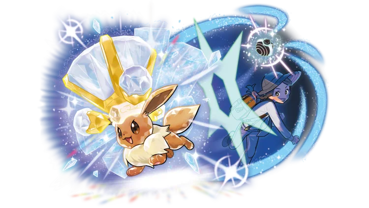

Disponible dès maintenant !
Pokémon Scarlet et Pokémon Violet sont les premiers jeux de rôle en monde ouvert de la série principale Pokémon. Ces opus restent fidèles à la licence, vous permettant de rencontrer des Pokémon, de faire équipe avec eux, de les combattre, de les entraîner et de les échanger, tout en proposant un nouveau type d'aventure enrichie.
Pokémon Écarlate et Pokémon Violet se déroulent dans un monde ouvert dans lequel les différentes villes s'intègrent naturellement au paysage environnant, sans aucune transition2,3. La région de Paldea est inspirée de la Péninsule Ibérique d’après les images du jeu, où l'on voit ce qui peut s'apparenter à une hacienda, d'autres bâtiments semblent reprendre l'architecture de la ville de Lisbonne ou encore un bâtiment ressemblant à la Sagrada Família de Barcelone4.
